대기환경산업기사 (2010-03-07 기출문제)
1과목: 대기오염개론
1. 다음 중 실내공기오염의 일반적인 지표가 되는 오염물질로서 다중이용시설에서 실내공기질 유지기준이 1000ppm 이하인 것은?
- N2
- CO
- CO2
- H2S
(정답률: 97%)

2. 지상 10m에서 풍속이 2m/sec 일 때 지상 150m 에서의 풍속은? (단, Deacon 식을 적용하고, 풍속지수는 0.5 이다.)
- 7.7m/sec
- 12.1m/sec
- 15.3m/sec
- 21.8m/sec
(정답률: 77%)
3. 흑채에서 복사되는 에너지 중 파장 λ와 λ+△λ사이에 들어있는 에너지량(Eλ)을 아래 식으로 표현하는 것과 관련한 법칙은? (단, T는 흑체의 온도, C1·C2는 상수)
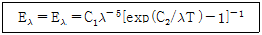
- 스테판볼츠만의 법칙
- 비인의 변위법칙
- 플랑크의 법칙
- 웨버훼이너의 법칙
(정답률: 78%)
4. 다음 대체연료 자동차의 설명으로 옳지 않은 것은?
- 수소자동차 - 생산된 단위에너지당 연료의 무게가 적고, 연소에 의해 발생하는 가스상 오염물질 양이 적다.
- 천연가스자동차 - 반응성 탄화수소 및 일산화탄소의 배출량이 매우 적다.
- 전기자동차 - 충전시간이 짧으며, 휘발유차량에 비해 1회 충전당 주행거리가 10배 이상으로 길다.
- 메탄올자동차 - 금속이나 플라스틱 재료의 침식 가능성이 존재한다.
(정답률: 96%)
5. London smog 사건과 관련된 기온역전의 종류는?
- 침강성
- 복사성
- 난류성
- 전선성
(정답률: 94%)
6. 다음 중 1, 2차 대기오염물질 모두에 해당하는 것은?
- O3
- PAN
- CO
- Aldehydes
(정답률: 89%)
7. 대류권내에서 CO2의 평균농도가 370ppm이고, 대류권의 평균 높이가 10km일 때, 대류권내에 존재하는 CO2의 무게는? (단, 지구의 반지름을 6400km라 가정한다.)
- 약 1.87 × 1012ton
- 약 3.75 × 1012ton
- 약 1.87 × 1013ton
- 약 3.75 × 1013ton
(정답률: 77%)
8. 다음 오염물질 중 “건전지 및 축전기, 인쇄, 크레용, 에나멜, 페인트, 고무가공, 도가니공업” 등이 주된 배출관련 업종인 것은?
- Pb
- HCl
- HCHO
- H2S
(정답률: 85%)
9. 대기오염물질에 관한 설명 중 옳지 않은 것은?
- 암모니아는 무색의 자극성 가스로서 쉽게 액화하므로 액체상태로 공업분야에 많이 이용된다.
- 포스겐은 수중에서 재빨리 염산으로 분해되어 거의 급성 전구증상이 없이 치사량을 흡입할 수 있으므로 매우 위험하다.
- 아황산가스는 물에 대한 용해도가 매우 높기 때문에 흡입된 대부분의 가스는 상기도 점막에서 흡수된다.
- 브롬(취소)은 자극성의 질식성 냄새를 가진 무색 휘발성 기체로서 주로 하기도에 대하여 급성 흡입효과를 나타낸다.
(정답률: 73%)
10. 다음 중 분산모델의 특징으로 가장 거리가 먼 것은?
- 지형 및 오염원의 조업조건에 영향을 받지 않는다.
- 2차 오염원의 확인이 가능하다.
- 점, 선, 면 오염원의 영향을 평가할 수 있다.
- 단기간 분석시 문제가 된다.
(정답률: 88%)
11. 대기오염물질의 특성에 관한 설명으로 가장 거리가 먼 것은?
- 염화비닐(vinyl chloride)에 만성폭로 되면 레이노증후군, 말단 골연화증, 간·비장의 섬유화가 일어난다.
- 삼염화에틸렌(trichloroethylene)은 중추신경계를 억제하며 간과 신장에 미치는 독성은 사염화탄소에 비해 낮은 편이다.
- 아크릴아미드(acryl amide)는 주로 피부를 통해 흡수되며 다발성 신경염을 일으킨다.
- 이황화탄소는 하기도를 통해서 흡수되기도 하지만 대부분 피부를 통해서 체내 흡수되며 폐부종을 일으킨다.
(정답률: 83%)
12. 다음 중 온실가스 감축, 오존층 보호를 위한 국제협약(의정서)등으로 가장 거리가 먼 적은?
- 몬트리올 의정서
- 교토 의정서
- 바젤 협약
- 비엔나 협약
(정답률: 84%)
13. 다음 고등식물에 피해를 주는 대기오염물질의 일반적인 독성정도 크기를 나타낸 것 중 옳은 것은? (단, 큰순서 ＞ 작은순서)
- Cl2 ＞ HF ＞ CO ＞ NO2
- SO2 ＞ Cl2 ＞ HF ＞ CO
- HF ＞ SO2 ＞ NO2 ＞ CO
- O3 ＞ NH3 ＞ HF ＞ CO
(정답률: 82%)
14. Coh(Coefficient of haze)에 관련된 설명으로 옳지 않은 것은?
- Coh 산출식에서 불투명도란 더러운 여과지를 통과한 빛 전달분율의 역수로 정의된다.
- Coh 산출식에서 광학적 밀도는 불투명도의 log 값으로 정의된다.
- Coh값이 0 이면 깨끗한 것이며, 빛전달분율이 0.794 이면 Coh값은 1 이 된다.
- Coh는 광학적 밀도를 0.01로 나눈 값이다.
(정답률: 88%)
15. 다음 중 오존량(두께)을 표시하는 단위로 옳은 것은?
- Phon
- Ozonosphere
- Dobson
- TSM
(정답률: 93%)
16. 런던스모그 사건에 대한 설명으로 옳지 않은 것은?
- 대기는 무풍, 주 발생시간은 아침, 저녁이었다.
- 시정은 0.8∼1.6km 정도, 습도는 35% 정도이었다.
- 환원반응을 통하여 스모그가 형성되었다.
- 주요오염 배출원은 공장 및 가정난방 이었다.
(정답률: 85%)
17. 다음 대기분산모델 중 미국에서 개발되었으며, 바람장모델로서 바람장과 오염물질 분산을 동시에 계산할 수 있는 것은?
- ADMS
- OCD
- AUSPLUME
- RAMS
(정답률: 68%)
18. 다음 중 메탄의 지표부근 배경농도 값으로 가장 적합한 것은?
- 약 1.5 ppm
- 약 15ppm
- 약 150 ppm
- 약 15000ppm
(정답률: 75%)
19. 다음 대기오염물질 분류 중 1차 오염물질에 해당하는 것은?
- NOCI
- H2O2
- N2O3
- PBN
(정답률: 76%)
20. 다음 특정물질 중 오존 파괴지수가 가장 큰 것은?
- CF3Br
- C2F4Br2
- C2HF2Br3
- CF2BrCI
(정답률: 61%)
2과목: 대기오염 공정시험 기준(방법)
21. 액체의 흡광도를 측정할 때 파장 1200nm 부근 측광부의 광전측광에 사용되는 장치로 가장 적합한 것은?
- 광전도셀
- 광전지
- 광전관
- 광전자증배관
(정답률: 88%)
22. 다음은 굴뚝에서 배출되는 먼지측정방법에 관한 설명이다. ( )안에 알맞은 말을 순서대로 옳게 나열한 것은?
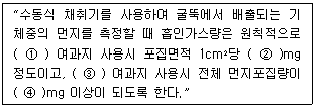
- ① : 원통형, ② : 1, ③ : 원형, ④ : 5
- ① : 원형, ② : 1, ③ : 원통형, ④ : 5
- ① : 원통형, ② : 0.5, ③ : 원형, ④ : 1
- ① : 원형, ② : 0.5, ③ : 원통형, ④ : 1
(정답률: 87%)
23. 굴뚝 배출가스 중의 무기 불소화합물을 불소 이온으로 분석하는 방법에 관한 설명으로 옳지 않은 것은?
- 흡광광도법은 시료 흡수액을 일정량으로 묽게 한 다음 완충액을 가하여 pH를 조절하고 란탄과 알리자린 콤플렉손을 가한 후 흡광도를 측정하는 방법이다.
- 용량법은 불소 이온을 방해이온과 분리한 다음 완충액을 가하여 pH를 조절하고 네오트린을 가한 다음 질산은 용액으로 적정한다.
- 시료중에 먼지가 혼입되는 것을 막기 위하여 시료 채취관의 적당한 곳에 넣는 여과재는 사불화에틸렌제 등으로 불소화합물의 영향을 받지 않아야 한다.
- 시료중의 무기 불소 화합물과 수분이 응축하는 것을 막기 위하여 시료 채취관 및 시료 채취관에서부터 흡수병까지의 사이를 140℃ 이상으로 가열해 준다.
(정답률: 68%)
24. 시료 중 중금속을 원자흡수분광광도법(원자흡광광도법)으로 분석하기 위하여 회화법으로 전처리 할 경우 사용하는 용융제로 적합한 것은?
- HCl + H2SO4
- Na2CO3 + NaNO3
- (NH4)2SO4 + HBr
- HBr + NH4OH
(정답률: 89%)
25. 대기오염공정시험방법상 따로 규정이 없을 경우 사용하는 시약의 규격으로 틀린 것은?
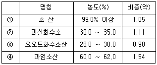
- ①
- ②
- ③
- ④
(정답률: 86%)
26. 가스크로마토그래프법의 정량분석방법 중 도입한 시료의 모든 성분이 용출하며 또한 모든 용출 성분의 상대감도를 구하여 역수를 취한 후 각 성분의 피이크 넓이에 곱하여 각 성분의 정확한 함유율을 알 수 있는 정량법으로 가장 적합한 것은?
- 피검성분추가법
- 내부표준법
- 넓이 백분율법
- 보정넓이 백분율법
(정답률: 82%)
27. 대기오염공정시험방법상 시험의 기재 및 용어의 의미로 옳은 것은?
- “정확히 단다”라 함은 규정한 량의 검체를 취하여 분석용 저울로 0.1mg까지 다는 것을 뜻한다.
- 고체성분의 양을 “정확히 취한다”라 함은 홀피펫, 메스플라스크 등으로 0.1mL까지 취하는 것을 뜻한다.
- “감압 또는 진공”이라 함은 따로 규정이 없는 한 15mmH2O 이하를 뜻한다.
- 시험조작 중 “즉시”라 함은 10초 이내에 표시된 조작을 하는 것을 뜻한다.
(정답률: 84%)
28. 다음은 환경대기 중의 알데하이드류의 고성능 액체크로마토그래피법에 관한 설명이다. ( )안에 알맞은 것은?
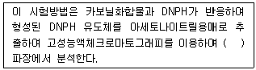
- 이온화학 검출기의 520nm
- 전기 전도도 검출기의 450nm
- 자외선(UV) 검출기의 360nm
- 가시선 흡수 검출기(VIS 검출기)의 220nm
(정답률: 71%)
29. 굴뚝 배출가스 분석대상 성분과 그 분석방법 및 흡수액의 관계로 옳지 않은 것은?
- 질소산화물 : 살츠만법, 무수설파닌산나트륨용액
- 브롬화합물 : 흡광광도법, 수산화나트륨용액
- 페놀 : 흡광광도법, 수산화나트륨용액
- 황화수소 : 흡광광도법, 아연아민착염용액
(정답률: 71%)
30. 굴뚝내의 배출가스 유속을 피토우관으로 측정한 결과 그 동압이 2.2mgHg 이었다면 굴뚝내의 배출가스의 평균유속(m/sec)은? (단, 배출가스 온도 250℃, 공기의 비중량 1.3kg/Sm3,피토우관계수 1.2 이다.)
- 8.6
- 16.9
- 25.5
- 35.3
(정답률: 63%)
31. 표준산소농도 적용을 받는 A성분의 실측농도가 200mg/Sm3이고, 실측산소농도가 3.5%이다. 표준산소농도로 보정한 A성분의 농도는? (단, 표준산소농도는 3.25% 이다.)
- 197mg/Sm3
- 203mg/Sm3
- 212mg/Sm3
- 221mg/Sm3
(정답률: 64%)
32. 다음 중 측정점 선정 시 굴뚝 단면이 원형인 경우 반경구분수(기준)은? (단, 굴뚝 반경은 3m이다.)
- 3
- 5
- 12
- 20
(정답률: 69%)
33. 다음은 비분산 적외선 분석법에서의 응답시간 성능기준이다. ( )안에 가장 적합한 것은?
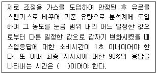
- 10초 이내
- 30초 이내
- 40초 이내
- 60초 이내
(정답률: 70%)
34. 굴뚝 배출가스 중 염화수소를 분석하기 위해 사용되는 시료채취관의 재질과 흡수액이 옳게 연결된 것은?
- 경질유리 - 붕산 용액
- 석영 - 수산화나트륨 용액
- 보통강철 - 과산화수소 수용액
- 스텐레스강 - 디에틸아민동 용액
(정답률: 79%)
35. 굴뚝 배출가스상 물질 시료채취를 위한 도관에 관한 설명으로 옳지 않은 것은?
- 도관은 가능한 한 수평으로 연결해야 하고, 하나의 도관으로 여러 개의 측정기를 사용할 경우 각 측정기 앞에서 도관을 직렬로 연결하여 사용한다.
- 도관의 안지름은 도관의 길이, 흡인가스의 유량, 응축수에 의한 막힘 또는 흡인펌프의 능력 등을 고려해서 4∼25mm로 한다.
- 도관의 길이는 되도록 짧게 하고, 부득이 길게 해서 쓰는 경우에는 이음매가 없는 배관을 써서 접속부분을 적게 하고, 76m를 넘지 않도록 한다.
- 도관으로 부득이 구부러진 관을 쓸 경우에는 응축수가 흘러나오기 쉽도록 경사지게(5° 이상)하고 시료 가스는 아래로 향하게 한다.
(정답률: 75%)
36. 굴뚝 배출가스 중 일산화탄소의 정전위 전해법으로 옳지 않은 것은?
- 90% 응답 시간은 5분 이내로 한다.
- 정전위 전해법을 이용한 계측기는 소형 경량으로서 이동 측정에 적합하다.
- 프로판 100ppm의 간섭영향 시험용 가스를 도입하였을 때 그 영향이 1ppm 이하이어야 한다.
- 시료가스 유량 변화에 따른 안정성은 최대 눈금값의 ±2% 이내로 한다.
(정답률: 93%)
37. Lambert Beer 법칙에 의한 흡광도 측정 시 입사광의 55%가 흡수되었을 때 흡광도는?
- 0.26
- 0.35
- 0.65
- 0.74
(정답률: 59%)
38. 굴뚝 배출가스 중 총탄화수소 측정장치 시스템과 교정 및 연소시에 사용되는 가스에 관한 설명으로 틀린 것은?
- 기록계를 사용하는 경우에는 최소 2회/분이 되는 기록계를 사용한다.
- 시료채취관은 굴뚝중심 부분의 10% 범위내에 위치할 정도의 길이의 것을 사용한다.
- 연소가스로는 불꽃이온화분석기를 사용하는 경우에 수소(40%)/헬륨(60%) 또는 수소(40%)/질소(60%) 가스를 사용한다.
- 영점가스는 총탄화수소농도(프로판 또는 탄소등가 농도)가 0.1ppmv 이하 또는 스팬값의 0.1% 이하인 고순도 공기를 사용한다.
(정답률: 73%)
39. 흡광광도법에 이용되는 램버어트 비어(Lambert-beer)의 법칙을 옳게 나타낸 식은? (단, Io : 입사광 강도, It : 투사광 강도, c : 농도, ℓ : 빛의 투사거리, ε : 흡광계수)
- Io = It · 10-εcℓ
- Io = It · 100-εcℓ
- It = Io · 10-εcℓ
- It = Io · 100-εcℓ
(정답률: 84%)
40. 다음은 환경대기 중의 아황산가스를 산정량 수동법으로 측정하는 방법이다. ( )안에 알맞은 것은?
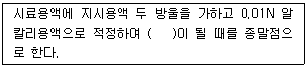
- 적색
- 황색
- 녹색
- 회색
(정답률: 58%)
3과목: 대기오염방지기술
41. 평판형 전기집진장치에서 입자의 이동속도가 5cm/sec, 방전적과 집진극 사이의 거리가 4.5cm, 배출가스의 유속이 3m/sec 인 경우 층류영역에서 집진율이 100%가 되는 집진극의 길이는?
- 1.9m
- 2.7m
- 3.3m
- 5.4m
(정답률: 67%)
42. 다음은 물리적 흡착과 화학적 흡착의 일반적인 특성을 상대비교 한 것이다. 옳지 않은 것은?
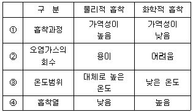
- ➀
- ➁
- ➂
- ➃
(정답률: 66%)
43. 상온 상압의 함진공기 143m3/min를 지름 20cm, 유효길이 3m 되는 원통형 Bag filter로 처리하고자 할 때 가스처리 속도를 1.5m/min로 한다면 소요되는 Bag의 수는?
- 51개
- 61개
- 71개
- 81개
(정답률: 75%)
44. 액체연료의 연소방식인 기화 연소방식과 분무화 연소방식에 관한 설명으로 옳지 않은 것은?
- 심지식, 증발식 연소는 기화연소방식에 해당한다.
- 증발식 연소는 경질유의 연소에 적합하다.
- 충돌 분무화식에서 분무화 입경을 작게 하기 위한 연료 예열온도는 35±5℃ 정도이다.
- 충돌 분무화식에서 분무화 입경은 연료의 정도와 표면장력이 클수록 커진다.
(정답률: 67%)
45. 다음은 가솔린엔진과 디젤엔진의 일반적인 특성을 상대비교 한 것이다. 옳지 않은 것은?
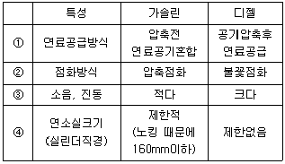
- ①
- ②
- ③
- ④
(정답률: 68%)
46. HOG가 2.1m, 흡수효율이 99%인 충전탑(packed tower)의 충전 높이(h)는?
- 약 6.5m
- 약 7.4m
- 약 8.3m
- 약 9.7m
(정답률: 64%)
47. 유압분무식 버너에 관한 설명으로 옳지 않은 것은?
- 대용량 버너 제작이 용이하다.
- 유량조절 범위가 1:10 정도로 넓어 부하변동에 대한 적응성이 좋다.
- 연료분사 범위는 15∼2000L/hr 정도이다.
- 분무각도가 40∼90° 정도로 크다.
(정답률: 58%)
48. 굴뚝 입구온도가 320℃, 출구온도가 152℃이면 굴뚝의 평균가스온도는?
- 약 204℃
- 약 219℃
- 약 226℃
- 약 242℃
(정답률: 54%)
49. Propane gas 1Sm3을 공기비 1.21로 완전연소할 때 생성되는 건조 연소가스량은? (단, 표준상태 기준)
- 26.8 Sm3
- 24.2 Sm3
- 22.3 Sm3
- 21.8 Sm3
(정답률: 62%)
50. 자동차후처리기술 중 CO, HC, NOx를 동시에 저감시키는 삼원촉매시스템에 관한 설명으로 옳지 않은 것은?
- 실제 이론공연비를 중심으로 삼원촉맨의 전환효율이 유지되는 공연비폭(window)이 있으며, 이 폭은 과잉공기율(λ)로는 1.5(λ=1.0±0.25)정도이며, A/F비로는 약 1.0(14.⑤∼15.⑤) 범위이다.
- 3성분을 동시에 저감시키기 위해서는 엔진에 공급되는 공기연료비가 이론공연비로 공급되어야 한다.
- 촉매는 주로 백금과 로듐의 비가 5:1 정도로 사용된다.
- Rh은 NO반응을, Pt은 주로 CO와 HC를 저감시키는 산화반응을 촉진시킨다.
(정답률: 77%)
51. 염소농도가 0.68%인 배기가스 2500 Sm3/hr을 Ca(OH)2의 현탁액으로 세정 처리하여 염소를 제거하려 한다. 이론적으로 필요한 Ca(OH)2 양(kg/hr)은?
- 약 56
- 약 66
- 약 76
- 약 86
(정답률: 44%)
52. 2대의 집진장치를 직렬로 연결 했을 때 2차 집진장치의 집진효율은 96.0%이고, 총집진효율은 99.0%이었다면, 1차 집진장치의 집진효율(%)은?
- 45%
- 60%
- 75%
- 85%
(정답률: 61%)
53. 다음 중력 및 관성력 집진장치에 관한 설명 중 옳지 않은 것은?
- 관성력 집진장치는 기류의 방향전환 횟수가 적고, 방향전환 각도가 클수록 압력손실은 커지나 집진은 잘된다.
- 관성력 집진장치는 일반적으로 충돌직전의 처리 가스속도가 크고, 처리 후의 출구 가스속도는 작을수록 미립자의 제거가 쉽다.
- 중력식 집진장치는 침강실 내의 처리가스의 속도가 작을수록 미립자가 포집된다.
- 중력식 집진장치는 침강실의 높이가 낮고, 수평길이가 길수록 집진율은 높아진다.
(정답률: 56%)
54. 다음 중 DME(Dimethyl Ether)연료의 특징으로 거리가 먼 것은?
- 고무와 반응하지 않으나, 금속의 부식성이 문제가 된다.
- 산소함유율이 34.8% 정도로 높다.
- 점도가 경유에 비해 낮다.
- 상온상압에서 무색투명한 기체이며, LPG와 유사한 기압에서 액화된다.
(정답률: 51%)
55. 세정식 집진장치에서 회전원판에 의해 분무액이 미립화될 경우 원심력과 표면장력에 의해 물방울 직경을 측정할 수 있다. 회전원판의 반경 4cm, 회전수 3600 rpm 일 때 물방울 직경은?
- 약 123 ㎛
- 약 186 ㎛
- 약 278 ㎛
- 약 396 ㎛
(정답률: 58%)
56. 조각시설에서 배출되는 다이옥신 생성량을 줄이기 위한 방법 중 적당하지 않은 것은?
- 소각로의 연소 온도를 850℃ 이상 올린다.
- 연소실에 2차 공기를 주입하여 난류개선을 한다.
- 산소와 일산화탄소 농도 측정을 통해 연소조건을 조정한다.
- 연소실에서의 체류시간을 0.5초 정도로 되도록 짧게 한다.
(정답률: 47%)
57. 다음 중 석탄의 탄화도가 클수록 증가하지 않는 것은?
- 고정탄소
- 착화온도
- 휘발분
- 연료비
(정답률: 75%)
58. 다음 중 벤츄리스크러버의 액가스비 범위로 가장 적합한 것은?
- 0.⑤ ∼ 0.1 L/m3
- 0.3 ∼ 1.5 L/m3
- 3 ∼ 10 L/m3
- 10 ∼ 50 L/m3
(정답률: 91%)
59. 탄소, 수소의 중량조성이 각각 85%, 15%인 액체연료를 매시간당 127kg로 완전연소 할 경우 필요한 이론 공기량(Sm3/hr)은?
- 약 1040
- 약 1260
- 약 1470
- 약 1750
(정답률: 51%)
60. Methane Propane이 용적비 1:1의 비율로 조성된 혼합가스 1Sm3를 완전연소 시키는데 20Sm3의 실제공기가 사용되었다면 이 경우 공기비는?
- 1.⑤
- 1.20
- 1.34
- 1.46
(정답률: 70%)
4과목: 대기환경 관계 법규
61. 대기환경보전법규상 다음 배출가스 관련부품을 장치별로 구분했을 때 연료증발가스방지장치(Evaporative Emission Control System)에 해당하는 것은?
- 정화조절밸브(Purge Control Valve)
- 리드 밸브(Read Valve)
- 냉각수온센서(Water Temperature Sensor)
- 서모스태트 감시장치(Themostat Monitor)
(정답률: 69%)
62. 대기환경보전법규상 환경부장관이 특별대책지역 중 사업장이 밀집되어 있는 구역의 사업장에서 배출되는 대기오염물질을 총량으로 규제하려는 경우 필수적 고시사항에 해당하지 않는 것은? (단, 그 밖에 총량규제구역의 대기관리를 위하여 필요한 사항은 제외)
- 총량규제구역
- 대기오염물질 측정기기 설치명세서와 그 도면
- 총량규제 대기오염문질
- 대기오염물질의 저감계획
(정답률: 70%)
63. 대기환경보전법규상 측정기기의 부착·운영 등과 관련된 행정처분기준 중 교정가스 또는 교정액의 표준값을 거짓으로 입력하거나 부적절한 교정가스 또는 교정액을 사용하는 경우의 각 위반차수(1차∼4차)별 행정처분기준으로 옳은 것은?
- 조업정지5일-조업정지10일-경고-지정취소
- 경고-경고-조업정지5일-조업정지10일
- 경고-조업정지5일-조업정지10일-허가취소
- 조업정지10일-조업정지30일-지정취소-폐쇄
(정답률: 72%)
64. 대기환경보전법규상 2009년 1월 1일 이후 제작자동차 중 휘발유를 사용하는 이륜자동차의 배출가스 보증기간 적용 기준으로 옳은 것은?
- 2년 또는 10000km
- 5년 또는 50000km
- 6년 또는 100000km
- 10년 또는 192000km
(정답률: 46%)
65. 대기환경보전법상 공동주택의 냉난방시설을 설치·운영하는 사업자에 대해 조업정지를 명하여야 하는 경우로 그 조업정지가 공익에 현저한 지장을 줄 우려가 있다고 인정되는 경우에 환경부장관이 조업정지처분에 갈음하여 부과할 수 있는 과징금 처분기준은?
- 1억원 이하
- 2억원 이하
- 3억원 이하
- 5억원 이하
(정답률: 73%)
66. 다음은 대기환경보전법상 등록의 취소에 관한 설명이다. ( )안에 공통으로 들어갈 알맞은 기간은?
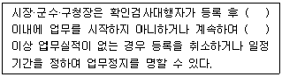
- 6개월
- 1년
- 1년 6개월
- 2년
(정답률: 62%)
67. 다음은 대기환경보전법령상 오염물질 초과에 따른 초과부과금의 위반횟수별 부과계수이다. ( )안에 알맞은 것은?
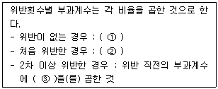
- ① 100분의 100, ② 100분의 1⑤, ③ 100분의 1⑤
- ① 100분의 100, ② 100분의 1⑤, ③ 100분의 110
- ① 100분의 1⑤, ② 100분의 110, ③ 100분의 110
- ① 100분의 1⑤, ② 100분의 110, ③ 100분의 115
(정답률: 77%)
68. 대기환경보전법규상 배출허용기준의 준수여부 등을 확인하기 위해 환경부령으로 지정된 대기오염도 검사기관에 해당하지 않는 것은?
- 대기환경기술진흥원
- 낙동강유역환경청
- 수도권대기환경청
- 원주지방환경청
(정답률: 80%)
69. 대기환경보전법령상 대기오염물질발생량의 합계가 연간 20톤 이상 80톤 미만인 사업장의 종별 분류로 옳은 것은?
- 1종 사업장
- 2종 사업장
- 3종 사업장
- 4종 사업장
(정답률: 91%)
70. 대기환경보전법상 특별대책지역내의 휘발성유기화합물 배출시설로서 휘발성유기화합물 배출억제시설 등의 조치를 하지 않은 사업자에 대한 벌칙기준은?
- 5년 이하의 징역이나 3천만원 이하의 벌금
- 1년 이하의 징역이나 500만원 이하의 벌금
- 300만원 이하의 벌금
- 200만원 이하의 벌금
(정답률: 74%)
71. 대기환경보전법규상 자동차연료 검사기관의 기술능력 및 검사장비 기준에 있어 LPG·CNG 검사장비에 해당하지 않는 것은?
- 밀도시험기(Density Meter)
- 황함량분석기(Sulfur Analyzer)
- 증류시험기(Distillation Apparatus)
- 동판부식시험기(Copper Strip Corrosion Apparatus)
(정답률: 72%)
72. 대기환경보전법규상 자동차연료인 휘발유 제조기준 중 황함량 기준은? (단, 2009년 1월 1일부터 적용기준)
- 10 ppm 이하
- 20 ppm 이하
- 30 ppm 이하
- 50 ppm 이하
(정답률: 75%)
73. 대기환경보전법규상 위임업무 보고사항 중 “자동차연료 제조기준 적합여부 검사현황” 보고횟수기준으로 옳은 것은?
- 수시
- 연 1회
- 연 2회
- 연 4회
(정답률: 50%)
74. 대기환경보전법령상 오존경보 단계별 조치사항 중 “주의보 발령”에 해당하는 조치사항은?
- 자동차의 사용자제 요청
- 주민의 실외활동 제한요청
- 사업장의 연료사용량 감축 권고
- 사업장의 조업시간 단축명령
(정답률: 60%)
75. 다음은 환경정책기본법상 용어의 정의이다. ( )안에 가장 알맞은 것은?
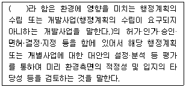
- 환경타당성검토
- 환경영향평가
- 사전환경성검토
- 환경저감평가
(정답률: 73%)
76. 대기환경보전법상 환경부장관은 황사피해방지를 위하여 5년마다 관계 중앙행정기관의 장과 협의하고 시·도지사의 의견을 들은 후 황사대핵위원회의 심의를 거쳐 황사피해방지 종합대책을 수립하여야 하는데, 이 종합대책에 포함되어야 하는 사항과 가장 거리가 먼 것은?
- 황사 발생 현황 및 전망
- 종합대책 추진실적 및 그 평가
- 황사 주 발생국가의 무역적 제재 방안 수립
- 황사피해 방지를 위한 국내대책 및 황사 발생 감소를 위한 국제협력
(정답률: 65%)
77. 대기환경보전법령상 대기오염물질의 초과부과금 산정기준 중 황산화물의 1킬로그램당 부과금액은 얼마인가?
- 500원
- 770원
- 2300원
- 6000원
(정답률: 74%)
78. 다음 중 대기환경보전법규상 특정대기유해물질에 해당하는 것은?
- 오존
- 아크롤레인
- 황화에틸
- 아세트알데히드
(정답률: 80%)
79. 환경정책기본법령상 오존(O3)의 대기환경기준으로 옳은 것은? (단, 1시간 평균치)
- 0.03 ppm 이하
- 0.⑤ ppm 이하
- 0.1 ppm 이하
- 0.15 ppm 이하
(정답률: 62%)
80. 다중이용시설 등의 실내공기질 관리법규상 “공항시설 중 여객터미널” 의 PM10(㎍/m3) 실내공기질 유지기준은?(관련 규정 개정전 문제로 여기서는 기존 정답인 2번을 누르면 정답 처리됩니다. 자세한 내용은 해설을 참고하세요.)
- 200 이하
- 150 이하
- 100 이하
- 25 이하
(정답률: 88%)